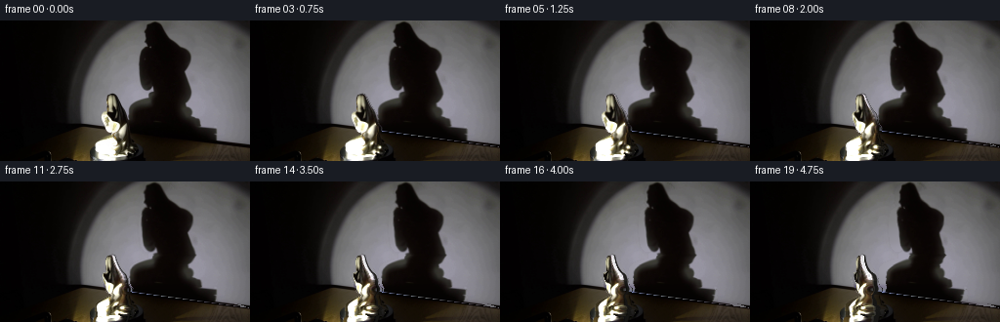
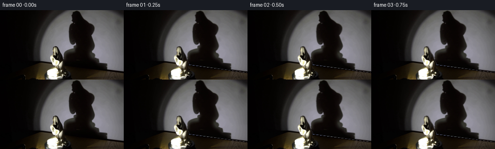
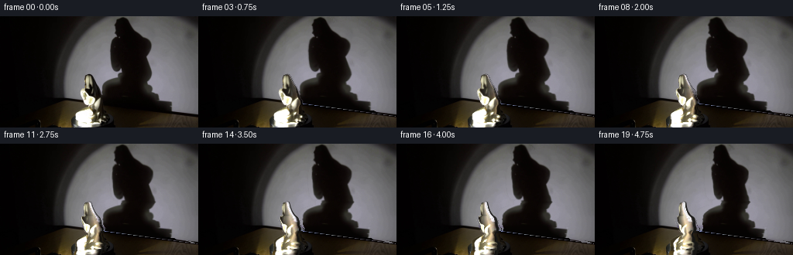
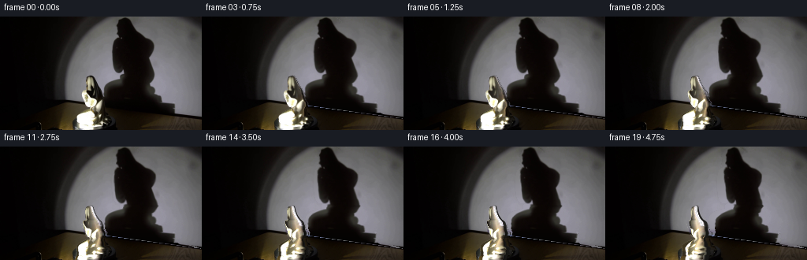
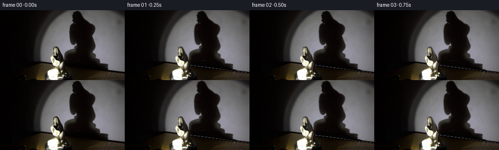

CODING AGENTS AS PIXEL WORLD MODELS
traex/GPT-6.1-Sol · 0084
点击播放 · 原生 RGB 像素
逐轮保存的候选
回放视频、检查图与代码变化。
每份候选均可单独播放。实际图片检查记录在下方工具轨迹中。
候选 01播放与检查图
点击播放 · 原生 RGB 像素


展开代码变化
--- 上一保存版本
+++ 本次保存版本
@@ -0,0 +1,229 @@
+from pathlib import Path
+import numpy as np
+from PIL import Image, ImageDraw
+from scipy.ndimage import gaussian_filter, map_coordinates
+from scipy.interpolate import PchipInterpolator
+import artifact_io
+
+ROOT=Path(__file__).resolve().parent
+H,W=144,256
+Y,X=np.mgrid[:H,:W].astype(float)
+SOURCE=np.asarray(Image.open(ROOT/'first_frame.png').convert('RGB'),dtype=np.uint8)
+I=SOURCE.astype(float)
+
+# The contours are measured in the supplied image. All surfaces and masks are
+# constructed here, rather than loaded from another source.
+object_knots=np.array([
+ [74.5,113,115],[76,109.7,119.0],[78,109.3,120.5],
+ [81,108.8,122.0],[84,109.0,123.5],[87,109.4,125.0],
+ [90,109.1,126.8],[92,109.5,128.0],[94,104.3,129.0],
+ [96,103.3,129.8],[98,103.4,130.1],[100,103.5,131.0],
+ [102,104.0,131.0],[104,104.9,131.4],[106,105.7,132.3],
+ [108,106.4,134.0],[110,107.0,134.8],[112,108.7,134.7],
+ [114,110.2,133.8],[116,113.0,132.0],[118,109.2,131.4],
+ [120,104.6,132.0],[122,101.2,132.8],[124,98.6,133.0],
+ [126,96.9,133.3],[128,96.8,138.7],[130,97.1,139.0],
+ [132,96.9,136.5],[134,97.6,137.0],[136,97.3,137.0],
+ [138,97.1,132.0],[140,95.6,131.5],[143,95.0,130.0],
+ [146,98.0,125.0]])
+L=PchipInterpolator(object_knots[:,0],object_knots[:,1])(np.arange(H))
+R=PchipInterpolator(object_knots[:,0],object_knots[:,2])(np.arange(H))
+L[:75]=113;R[:75]=113
+om=np.clip(np.minimum(X-L[:,None]+.6,R[:,None]-X+.6),0,1)
+om[:75]=0
+
+shadow_knots=np.array([
+ [0,151,161],[2,148,166],[4,147,169],[8,146.5,171],
+ [12,147,173],[18,148,178],[22,149,181],[25,149,186],
+ [28,144,191],[32,142,194],[36,141,195],[40,141,195],
+ [44,141,193],[48,142,191],[52,143,190],[56,144,191],
+ [60,144,192],[64,145,193],[68,147,194],[71,151,195],
+ [73,154,195],[75,150,195],[78,147,194],[80,140,194],
+ [83,129,194],[86,127,193],[88,131,193],[90,132,196],
+ [94,132,199],[98,132,199],[102,132,202],[106,133,204],
+ [110,135,214],[114,135,220],[120,135,226],[124,141,233],
+ [128,151,245],[135,151,255],[144,155,255]])
+sl=PchipInterpolator(shadow_knots[:,0],shadow_knots[:,1])(np.arange(H))
+sr=PchipInterpolator(shadow_knots[:,0],shadow_knots[:,2])(np.arange(H))
+wall_edge=94.4+.135*X
+wall=np.clip(wall_edge-Y+.5,0,1)
+shadow_region=(X>sl[:,None]-6)&(X<sr[:,None]+7)&(wall>.01)
+# Smooth illuminated wall, fitted only to uncovered wall pixels. Per-row
+# cubic illumination fits retain the spotlight's fixed falloff.
+Bfit=np.zeros_like(I)
+for y in range(H):
+ x=np.arange(W,dtype=float)
+ # The bright side of the illuminated oval starts farther right near its top.
+ left=max(92,125-.40*y)
+ good=(x>=left)&(x<255)&(y<94.4+.135*x-2)
+ good &= ~((x>sl[y]-8)&(x<sr[y]+8))
+ if y>=75:good &= ~((x>L[y]-4)&(x<R[y]+5))
+ if np.sum(good)>12:
+ q=(x-175)/80
+ degree=3 if y<80 else 2
+ for k in range(3):
+ co=np.polynomial.polynomial.polyfit(q[good],I[y,good,k],degree)
+ Bfit[y,:,k]=np.polynomial.polynomial.polyval(q,co)
+ else:
+ Bfit[y]=Bfit[max(0,y-1)]
+Bfit=gaussian_filter(Bfit,(1.7,.6,0))
+Bfit=np.clip(Bfit,0,190)
+# Restore only occluded areas; the remainder of the photograph is untouched.
+B=I.copy()
+B[shadow_region]=Bfit[shadow_region]
+# Very low ambient light in the occluded part of the wall.
+ambient=np.empty_like(I)
+for k,v in enumerate([8,4,2]):
+ ambient[:,:,k]=2+(v-2)*np.exp(-((Y-73)/43)**4)
+transmission=np.ones_like(I)
+transmission[shadow_region]=np.clip((I[shadow_region]-ambient[shadow_region])/
+ np.maximum(B[shadow_region]-ambient[shadow_region],1),0,1)
+alpha=1-transmission
+# Limit the wall shadow to its actual dark connected footprint, including penumbra.
+alpha[om>.05]=0
+alpha*=wall[:,:,None]
+# In unobscured areas near the hand outline the fit can differ a little from
+# the photograph; retaining those pixels prevents a halo on the wall.
+strength=np.max(alpha,axis=2)
+strength[~shadow_region]=0
+edgeweight=np.clip((strength-.025)/.10,0,1)
+B=I*(1-edgeweight[:,:,None])+B*edgeweight[:,:,None]
+alpha=np.where(edgeweight[:,:,None]>0,
+ np.clip((B-I)/np.maximum(B-ambient,1),0,1),0)
+alpha[om>.05]=0
+
+# Fill the stationary backdrop underneath the figurine, using the wall above
+# the tabletop and the warm dark tabletop below it.
+background=B.copy()
+for y in range(75,H):
+ valid=(np.arange(W)<L[y]-3)|(np.arange(W)>R[y]+4)
+ for k in range(3):
+ if y<=107:
+ fill=Bfit[y,:,k].copy()
+ else:
+ xl=max(76,int(L[y])-4);xr=min(W-1,int(R[y])+5)
+ a=np.median(I[y,max(0,xl-3):xl+1,k])
+ b=np.median(I[y,xr:xr+4,k])
+ t=np.clip((np.arange(W)-xl)/max(1,xr-xl),0,1)
+ fill=a*(1-t)+b*t
+ # The wall behind the upper half of the statue is illuminated;
+ # below the sloping wall/table junction it is a black turntable.
+ wm=wall[y]
+ fill=wm*Bfit[y,:,k]+(1-wm)*fill
+ background[y,:,k]=background[y,:,k]*(1-om[y])+fill*om[y]
+
+# Cross-sections of a sculptural volume. The material is projectively sampled
+# from the photograph on the front; the unobserved rear is ivory porcelain.
+cy=(L+R)/2
+rx=np.maximum((R-L)/2,.3)
+axis=118.0
+# Depth offsets account for the projecting head, bent arms and draped base.
+depth_knots=np.array([[74,2],[82,4],[90,3],[96,0],[104,-1],
+ [110,-1],[116,0],[120,0],[128,1],[136,0],[144,0]])
+cz=PchipInterpolator(depth_knots[:,0],depth_knots[:,1])(np.arange(H))
+rz=rx*np.interp(np.arange(H),[74,87,97,111,118,128,144],[.76,.72,.83,.74,.64,.71,.82])
+# Silhouette has arms and folds rather than a uniformly round solid: small
+# depth changes make them turn around the same axis as the rest of the piece.
+rz=np.maximum(rz,.35)
+
+# Fixed direction of the spotlight in camera coordinates.
+light=np.array([-.73,.684])
+
+def sample(a,ys,xs):
+ if a.ndim==2:return map_coordinates(a,[ys,xs],order=1,mode='nearest')
+ return np.stack([map_coordinates(a[:,:,k],[ys,xs],order=1,mode='nearest') for k in range(a.shape[2])],-1)
+
+def render_statue(theta):
+ co,si=np.cos(theta),np.sin(theta)
+ cxrot=axis+(cy-axis)*co-cz*si
+ zc=(cy-axis)*si+cz*co
+ dd=X-cxrot[:,None]
+ rr=rx[:,None]; zz=rz[:,None]
+ aa=si*si/(rr*rr)+co*co/(zz*zz)
+ bb=2*dd*si*co*(1/(rr*rr)-1/(zz*zz))
+ cc=dd*dd*(co*co/(rr*rr)+si*si/(zz*zz))-1
+ disc=bb*bb-4*aa*cc
+ dz=(-bb+np.sqrt(np.maximum(disc,0)))/(2*aa)
+ u=(dd*co+dz*si)/rr
+ v=(-dd*si+dz*co)/zz
+ u=np.clip(u,-1,1);v=np.clip(v,-1,1)
+ srcx=cy[:,None]+rr*u
+ # Rotation is about the vertical axis; slight camera elevation exposes
+ # the upper surfaces without changing the height of the statue.
+ srcy=Y+.10*(dz+zc[:,None]-(cz[:,None]+zz*v))
+ original=sample(I,srcy,srcx)
+ nx=u/rr;nz=v/zz
+ nlen=np.sqrt(nx*nx+nz*nz)
+ nx/=np.maximum(nlen,1e-8);nz/=np.maximum(nlen,1e-8)
+ # Material illumination changes with the stationary lamp, not the camera.
+ n0x=nx;n0z=np.abs(nz)
+ dot0=n0x*light[0]+n0z*light[1]
+ dot1=(nx*co-nz*si)*light[0]+(nx*si+nz*co)*light[1]
+ illum0=.14+1.30*np.maximum(dot0,0)**.82
+ illum1=.14+1.30*np.maximum(dot1,0)**.82
+ ratio=np.clip(illum1/illum0,.40,5.0)**.83
+ color=original*ratio[:,:,None]
+ # Backside material, with the same soft warm glaze and non-uniform folds.
+ fold=1-.08*np.sin((srcx-100)*1.4+Y*.2)**2
+ rear=np.array([244,238,218])[None,None,:]*illum1[:,:,None]*fold[:,:,None]
+ rear=np.clip(rear,0,255)
+ # A narrow smooth overlap avoids a texture discontinuity at the image's
+ # front/back seam as the sculpture turns.
+ rear_amount=np.clip(-v/.25,0,1)
+ seam=sample(I,Y,cy[:,None]+rr*np.sign(u))
+ darkedge=np.clip(np.mean(seam,axis=2)/90,.18,1)
+ rear=rear*(.6+.4*darkedge[:,:,None])
+ color=color*(1-rear_amount[:,:,None])+rear*rear_amount[:,:,None]
+ half=np.sqrt((rr*co)**2+(zz*si)**2)
+ coverage=np.clip(half-np.abs(dd)+.52,0,1)
+ coverage[Y<74.7]=0
+ coverage*=np.clip((Y-74.6)*2,0,1)
+ # Image cutout alpha follows the reconstructed surface at the initial view.
+ cut=sample(om,srcy,srcx)
+ coverage*=np.where(v>0,np.maximum(cut,.15),1)
+ return np.clip(color,0,255),coverage
+
+# A shadow is a projection from the lamp, not a copy pasted next to the
+# statue. Its calibrated initial cross-sections are projected at the same
+# angular speed as the statue's cross-sections.
+shadow_center=(sl+sr)/2
+shadow_radius=(sr-sl)/2
+shadow_axis=177.
+shadow_depth=np.interp(np.arange(H),[0,20,35,65,75,85,98,115,143],
+ [4,3,0,-1,-3,1,1,0,0])
+shadow_ratio=np.interp(np.arange(H),[0,20,32,55,71,80,92,108,143],
+ [.86,.70,.80,.70,.66,.57,.78,.85,.85])
+
+def render_shadow(theta):
+ # The light is left of the viewing axis. Elliptical cross-sections are
+ # therefore seen at a different azimuth by the light and by the camera.
+ beta=-.34
+ r=shadow_ratio[:,None]
+ factor=np.sqrt(np.cos(theta+beta)**2+r*r*np.sin(theta+beta)**2)/np.sqrt(np.cos(beta)**2+r*r*np.sin(beta)**2)
+ newcenter=shadow_axis+(shadow_center-shadow_axis)*np.cos(theta)-2.05*shadow_depth*np.sin(theta)
+ # Bent arm and head silhouette move around the fixed vertical axis.
+ xs=shadow_center[:,None]+(X-newcenter[:,None])/factor
+ shift=.50*np.sin(theta)*np.interp(np.arange(H),[0,25,40,75,100,143],[-1,-1,0,1,0,0])
+ ys=Y-shift[:,None]
+ sa=sample(alpha,ys,xs)
+ sa=gaussian_filter(sa,(.20,.24,0))
+ sa*=wall[:,:,None]
+ return np.clip(sa,0,1)
+
+frames=[SOURCE.copy()]
+for n in range(1,20):
+ theta=np.deg2rad(14.0)*n/4
+ sa=render_shadow(theta)
+ scene=background*(1-sa)+ambient*sa
+ fg,coverage=render_statue(theta)
+ result=scene*(1-coverage[:,:,None])+fg*coverage[:,:,None]
+ # Stationary black platform. Its edge is nearly outside the image; keep
+ # the turntable support and all surrounding apparatus locked in place.
+ result=np.clip(np.rint(result),0,255).astype(np.uint8)
+ frames.append(result)
+frames=np.stack(frames)
+artifact_io.save(frames,ROOT)
+# Numerical construction aids for local inspection only.
+Image.fromarray(np.clip(background,0,255).astype(np.uint8)).save(ROOT/'.tmp/background.png')
+Image.fromarray(np.clip(alpha*255,0,255).astype(np.uint8)).save(ROOT/'.tmp/shadow_alpha.png')
+Image.fromarray(np.clip(om*255,0,255).astype(np.uint8)).save(ROOT/'.tmp/object_alpha.png')
候选 02播放与检查图
点击播放 · 原生 RGB 像素

展开代码变化
--- 上一保存版本
+++ 本次保存版本
@@ -163,6 +163,12 @@
illum1=.14+1.30*np.maximum(dot1,0)**.82
ratio=np.clip(illum1/illum0,.40,5.0)**.83
color=original*ratio[:,:,None]
+ # Recover light on surfaces that were in deep self-shadow in the first
+ # view. Porcelain is not intrinsically black: newly lamp-facing facets
+ # reveal their ivory glaze rather than carrying the old shadow with them.
+ gain=np.maximum(illum1-illum0,0)
+ reveal=np.clip((65-np.mean(original,axis=2))/65,0,1)
+ color+=np.array([183,177,156])[None,None,:]*gain[:,:,None]*reveal[:,:,None]
# Backside material, with the same soft warm glaze and non-uniform folds.
fold=1-.08*np.sin((srcx-100)*1.4+Y*.2)**2
rear=np.array([244,238,218])[None,None,:]*illum1[:,:,None]*fold[:,:,None]
@@ -186,6 +192,11 @@
# A shadow is a projection from the lamp, not a copy pasted next to the
# statue. Its calibrated initial cross-sections are projected at the same
# angular speed as the statue's cross-sections.
+# Extend the occluder behind the tabletop border. The tabletop itself is a
+# fixed photographic layer, not part of the moving wall shadow.
+for y in range(H):
+ ex=(X[y]>sl[y]+2)&(X[y]<sr[y]-2)&(Y[y]>wall_edge[y]-3)
+ alpha[y,ex]=1
shadow_center=(sl+sr)/2
shadow_radius=(sr-sl)/2
shadow_axis=177.
候选 03播放与检查图
点击播放 · 原生 RGB 像素


展开代码变化
--- 上一保存版本
+++ 本次保存版本
@@ -221,11 +221,31 @@
sa*=wall[:,:,None]
return np.clip(sa,0,1)
+# A dark, circular turntable is only partly visible at the lower border.
+# Rotate its small surface variations while keeping the fixed light gradient.
+turn_y=143.5
+turn_x=117.5
+turn_r=46.5
+turn_flat=.34
+turn_v=(Y-turn_y)/turn_flat
+turn_rr=np.sqrt((X-turn_x)**2+turn_v**2)
+turn_mask=np.clip(turn_r-turn_rr+.5,0,1)*np.clip((Y-128)/3,0,1)
+turn_mask*=1-om
+turn_smooth=gaussian_filter(I,(2.2,2.2,0))
+turn_texture=np.clip(I-turn_smooth,-4,4)
+# Avoid using the statue or apparatus as a texture on the circular base.
+turn_texture*=((1-om)*turn_mask)[:,:,None]
+
frames=[SOURCE.copy()]
for n in range(1,20):
theta=np.deg2rad(14.0)*n/4
sa=render_shadow(theta)
scene=background*(1-sa)+ambient*sa
+ cs,sn=np.cos(theta),np.sin(theta)
+ tx=turn_x+cs*(X-turn_x)+sn*turn_v
+ ty=turn_y+turn_flat*(-sn*(X-turn_x)+cs*turn_v)
+ moved_texture=sample(turn_texture,ty,tx)
+ scene+=(moved_texture-turn_texture)*turn_mask[:,:,None]*.55
fg,coverage=render_statue(theta)
result=scene*(1-coverage[:,:,None])+fg*coverage[:,:,None]
# Stationary black platform. Its edge is nearly outside the image; keep
可观测工具轨迹
实际执行的命令与返回图片。
命令 1exit 0
/bin/bash -lc "ls -la && cat prompt.txt && printf '\\n---RULES---\\n' && cat GENERATION_RULES.md"
命令 2exit 0
/bin/bash -lc "cat artifact_io.py && python - <<'PY'
from PIL import Image
import numpy as np
im=np.array(Image.open('first_frame.png').convert('RGB'));print(im.shape)
# grayscale ascii 128x72
im2=np.array(Image.fromarray(im).resize((128,72)))
chars=' .,:;irsXA253hMHGS#9B&@'
g=im2.mean(2)
for row in g:
print(''.join(chars[int(v/256*len(chars))] for v in row))
print('colors:')
for y in range(0,144,8):
print(y, ['%d,%d,%d'%tuple(im[y,x]) for x in range(0,256,16)])
PY"命令 3exit 0
/bin/bash -lc "python - <<'PY'
from PIL import Image
import numpy as np
im=np.array(Image.open('first_frame.png').convert('RGB'))
for box in [(89,67,140,144),(133,0,215,125),(40,108,180,144)]:
x0,y0,x1,y1=box
print('\\nBOX',box)
rgb=im[y0:y1,x0:x1]; v=rgb.mean(-1);chars=' .:-=+*#%@'
for row in v:print(''.join(chars[min(9,int(x*10/256))] for x in row))
print('warm porcelain classification:')
for row in rgb:
print(''.join('W' if min(p)>210 else 'O' if p[0]>150 and p[1]>130 and p[2]<p[1]-10 else '+' if p[0]>105 and p[1]>95 and p[2]<p[1]-8 else '.' if np.mean(p)>75 else ' ' for p in row))
PY"命令 4exit 0
/bin/bash -lc "python - <<'PY'
from PIL import Image
import numpy as np
im=np.array(Image.open('first_frame.png'))
for y in range(70,144):
row=[]
for x in range(92,142):
r,g,b=map(int,im[y,x]); val=(r+g+b)/3
if val<14: c=' '
elif val<30:c='.'
elif val<60:c=':'
elif r>g+6 and g>b+6: c='Y' if val>170 else 'y' if val>100 else ';'
elif val<90:c='-'
elif val<120:c='='
elif val<150:c='+'
elif val<180:c='*'
elif val<210:c='#'
elif val<240:c='O'
else:c='@'
row.append(c)
print(f'{y:3} '+''.join(row))
PY"命令 5exit 0
/bin/bash -lc "python - <<'PY'
import numpy as np
from PIL import Image
im=np.array(Image.open('first_frame.png').convert('RGB'))
for y in [76,80,85,90,94,96,100,104,108,112,116,120,124,128,132,136,140,143]:
print('\\n',y)
for x in range(96,142):
print(f'{x}:{tuple(im[y,x])}',end=' ')
print()
PY"命令 6exit 0
/bin/bash -lc "python - <<'PY'
from PIL import Image
import numpy as np
im=np.array(Image.open('first_frame.png')).astype(float)
print('enhanced dark left')
a=im[:,:105].mean(2);a=(a/60)**.5*255; a=np.minimum(a,255)
a=np.array(Image.fromarray(a.astype('uint8')).resize((105,72)))
c=' .:-=+*#%@'
for y,row in enumerate(a):print(f'{y*2:3} '+''.join(c[min(9,int(v/256*10))] for v in row))
PY"命令 7exit 0
/bin/bash -lc "python - <<'PY'
from PIL import Image
import numpy as np
im=np.array(Image.open('first_frame.png')).astype(float)
for x in [64,68,72,76,80,84,88,92,96,140,160,180,200,212,224,236,248]:
print(x,' '.join(f'{y}:{im[y,x].mean():.0f}' for y in range(100,144,2)))
PY"命令 8exit 0
/bin/bash -lc "python - <<'PY'
import scipy, PIL
try:import cv2;print('cv2',cv2.__version__)
except:pass
PY"命令 9exit 0
/bin/bash -lc "cat > generate.py <<'PY'
from pathlib import Path
import numpy as np
from PIL import Image, ImageDraw
from scipy.ndimage import gaussian_filter, map_coordinates
from scipy.interpolate import PchipInterpolator
import artifact_io
ROOT=Path(__file__).resolve().parent
H,W=144,256
Y,X=np.mgrid[:H,:W].astype(float)
SOURCE=np.asarray(Image.open(ROOT/'first_frame.png').convert('RGB'),dtype=np.uint8)
I=SOURCE.astype(float)
# The contours are measured in the supplied image. All surfaces and masks are
# constructed here, rather than loaded from another source.
object_knots=np.array([
[74.5,113,115],[76,109.7,119.0],[78,109.3,120.5],
[81,108.8,122.0],[84,109.0,123.5],[87,109.4,125.0],
[90,109.1,126.8],[92,109.5,128.0],[94,104.3,129.0],
[96,103.3,129.8],[98,103.4,130.1],[100,103.5,131.0],
[102,104.0,131.0],[104,104.9,131.4],[106,105.7,132.3],
[108,106.4,134.0],[110,107.0,134.8],[112,108.7,134.7],
[114,110.2,133.8],[116,113.0,132.0],[118,109.2,131.4],
[120,104.6,132.0],[122,101.2,132.8],[124,98.6,133.0],
[126,96.9,133.3],[128,96.8,138.7],[130,97.1,139.0],
[132,96.9,136.5],[134,97.6,137.0],[136,97.3,137.0],
[138,97.1,132.0],[140,95.6,131.5],[143,95.0,130.0],
[146,98.0,125.0]])
L=PchipInterpolator(object_knots[:,0],object_knots[:,1])(np.arange(H))
R=PchipInterpolator(object_knots[:,0],object_knots[:,2])(np.arange(H))
L[:75]=113;R[:75]=113
om=np.clip(np.minimum(X-L[:,None]+.6,R[:,None]-X+.6),0,1)
om[:75]=0
shadow_knots=np.array([
[0,151,161],[2,148,166],[4,147,169],[8,146.5,171],
[12,147,173],[18,148,178],[22,149,181],[25,149,186],
[28,144,191],[32,142,194],[36,141,195],[40,141,195],
[44,141,193],[48,142,191],[52,143,190],[56,144,191],
[60,144,192],[64,145,193],[68,147,194],[71,151,195],
[73,154,195],[75,150,195],[78,147,194],[80,140,194],
[83,129,194],[86,127,193],[88,131,193],[90,132,196],
[94,132,199],[98,132,199],[102,132,202],[106,133,204],
[110,135,214],[114,135,220],[120,135,226],[124,141,233],
[128,151,245],[135,151,255],[144,155,255]])
sl=PchipInterpolator(shadow_knots[:,0],shadow_knots[:,1])(np.arange(H))
sr=PchipInterpolator(shadow_knots[:,0],shadow_knots[:,2])(np.arange(H))
wall_edge=94.4+.135*X
wall=np.clip(wall_edge-Y+.5,0,1)
shadow_region=(X>sl[:,None]-6)&(X<sr[:,None]+7)&(wall>.01)
# Smooth illuminated wall, fitted only to uncovered wall pixels. Per-row
# cubic illumination fits retain the spotlight's fixed falloff.
Bfit=np.zeros_like(I)
for y in range(H):
x=np.arange(W,dtype=float)
# The bright side of the illuminated oval starts farther right near its top.
left=max(92,125-.40*y)
good=(x>=left)&(x<255)&(y<94.4+.135*x-2)
good &= ~((x>sl[y]-8)&(x<sr[y]+8))
if y>=75:good &= ~((x>L[y]-4)&(x<R[y]+5))
if np.sum(good)>12:
q=(x-175)/80
degree=3 if y<80 else 2
for k in range(3):
co=np.polynomial.polynomial.polyfit(q[good],I[y,good,k],degree)
Bfit[y,:,k]=np.polynomial.polynomial.polyval(q,co)
else:
Bfit[y]=Bfit[max(0,y-1)]
Bfit=gaussian_filter(Bfit,(1.7,.6,0))
Bfit=np.clip(Bfit,0,190)
# Restore only occluded areas; the remainder of the photograph is untouched.
B=I.copy()
B[shadow_region]=Bfit[shadow_region]
# Very low ambient light in the occluded part of the wall.
ambient=np.empty_like(I)
for k,v in enumerate([8,4,2]):
ambient[:,:,k]=2+(v-2)*np.exp(-((Y-73)/43)**4)
transmission=np.ones_like(I)
transmission[shadow_region]=np.clip((I[shadow_region]-ambient[shadow_region])/
np.maximum(B[shadow_region]-ambient[shadow_region],1),0,1)
alpha=1-transmission
# Limit the wall shadow to its actual dark connected footprint, including penumbra.
alpha[om>.05]=0
alpha*=wall[:,:,None]
# In unobscured areas near the hand outline the fit can differ a little from
# the photograph; retaining those pixels prevents a halo on the wall.
strength=np.max(alpha,axis=2)
strength[~shadow_region]=0
edgeweight=np.clip((strength-.025)/.10,0,1)
B=I*(1-edgeweight[:,:,None])+B*edgeweight[:,:,None]
alpha=np.where(edgeweight[:,:,None]>0,
np.clip((B-I)/np.maximum(B-ambient,1),0,1),0)
alpha[om>.05]=0
# Fill the stationary backdrop underneath the figurine, using the wall above
# the tabletop and the warm dark tabletop below it.
background=B.copy()
for y in range(75,H):
valid=(np.arange(W)<L[y]-3)|(np.arange(W)>R[y]+4)
for k in range(3):
if y<=107:
fill=Bfit[y,:,k].copy()
else:
xl=max(76,int(L[y])-4);xr=min(W-1,int(R[y])+5)
a=np.median(I[y,max(0,xl-3):xl+1,k])
b=np.median(I[y,xr:xr+4,k])
t=np.clip((np.arange(W)-xl)/max(1,xr-xl),0,1)
fill=a*(1-t)+b*t
# The wall behind the upper half of the statue is illuminated;
# below the sloping wall/table junction it is a black turntable.
wm=wall[y]
fill=wm*Bfit[y,:,k]+(1-wm)*fill
background[y,:,k]=background[y,:,k]*(1-om[y])+fill*om[y]
# Cross-sections of a sculptural volume. The material is projectively sampled
# from the photograph on the front; the unobserved rear is ivory porcelain.
cy=(L+R)/2
rx=np.maximum((R-L)/2,.3)
axis=118.0
# Depth offsets account for the projecting head, bent arms and draped base.
depth_knots=np.array([[74,2],[82,4],[90,3],[96,0],[104,-1],
[110,-1],[116,0],[120,0],[128,1],[136,0],[144,0]])
cz=PchipInterpolator(depth_knots[:,0],depth_knots[:,1])(np.arange(H))
rz=rx*np.interp(np.arange(H),[74,87,97,111,118,128,144],[.76,.72,.83,.74,.64,.71,.82])
# Silhouette has arms and folds rather than a uniformly round solid: small
# depth changes make them turn around the same axis as the rest of the piece.
rz=np.maximum(rz,.35)
# Fixed direction of the spotlight in camera coordinates.
light=np.array([-.73,.684])
def sample(a,ys,xs):
if a.ndim==2:return map_coordinates(a,[ys,xs],order=1,mode='nearest')
return np.stack([map_coordinates(a[:,:,k],[ys,xs],order=1,mode='nearest') for k in range(a.shape[2])],-1)
def render_statue(theta):
co,si=np.cos(theta),np.sin(theta)
cxrot=axis+(cy-axis)*co-cz*si
zc=(cy-axis)*si+cz*co
dd=X-cxrot[:,None]
rr=rx[:,None]; zz=rz[:,None]
aa=si*si/(rr*rr)+co*co/(zz*zz)
bb=2*dd*si*co*(1/(rr*rr)-1/(zz*zz))
cc=dd*dd*(co*co/(rr*rr)+si*si/(zz*zz))-1
disc=bb*bb-4*aa*cc
dz=(-bb+np.sqrt(np.maximum(disc,0)))/(2*aa)
u=(dd*co+dz*si)/rr
v=(-dd*si+dz*co)/zz
u=np.clip(u,-1,1);v=np.clip(v,-1,1)
srcx=cy[:,None]+rr*u
# Rotation is about the vertical axis; slight camera elevation exposes
# the upper surfaces without changing the height of the statue.
srcy=Y+.10*(dz+zc[:,None]-(cz[:,None]+zz*v))
original=sample(I,srcy,srcx)
nx=u/rr;nz=v/zz
nlen=np.sqrt(nx*nx+nz*nz)
nx/=np.maximum(nlen,1e-8);nz/=np.maximum(nlen,1e-8)
# Material illumination changes with the stationary lamp, not the camera.
n0x=nx;n0z=np.abs(nz)
dot0=n0x*light[0]+n0z*light[1]
dot1=(nx*co-nz*si)*light[0]+(nx*si+nz*co)*light[1]
illum0=.14+1.30*np.maximum(dot0,0)**.82
illum1=.14+1.30*np.maximum(dot1,0)**.82
ratio=np.clip(illum1/illum0,.40,5.0)**.83
color=original*ratio[:,:,None]
# Backside material, with the same soft warm glaze and non-uniform folds.
fold=1-.08*np.sin((srcx-100)*1.4+Y*.2)**2
rear=np.array([244,238,218])[None,None,:]*illum1[:,:,None]*fold[:,:,None]
rear=np.clip(rear,0,255)
# A narrow smooth overlap avoids a texture discontinuity at the image's
# front/back seam as the sculpture turns.
rear_amount=np.clip(-v/.25,0,1)
seam=sample(I,Y,cy[:,None]+rr*np.sign(u))
darkedge=np.clip(np.mean(seam,axis=2)/90,.18,1)
rear=rear*(.6+.4*darkedge[:,:,None])
color=color*(1-rear_amount[:,:,None])+rear*rear_amount[:,:,None]
half=np.sqrt((rr*co)**2+(zz*si)**2)
coverage=np.clip(half-np.abs(dd)+.52,0,1)
coverage[Y<74.7]=0
coverage*=np.clip((Y-74.6)*2,0,1)
# Image cutout alpha follows the reconstructed surface at the initial view.
cut=sample(om,srcy,srcx)
coverage*=np.where(v>0,np.maximum(cut,.15),1)
return np.clip(color,0,255),coverage
# A shadow is a projection from the lamp, not a copy pasted next to the
# statue. Its calibrated initial cross-sections are projected at the same
# angular speed as the statue's cross-sections.
shadow_center=(sl+sr)/2
shadow_radius=(sr-sl)/2
shadow_axis=177.
shadow_depth=np.interp(np.arange(H),[0,20,35,65,75,85,98,115,143],
[4,3,0,-1,-3,1,1,0,0])
shadow_ratio=np.interp(np.arange(H),[0,20,32,55,71,80,92,108,143],
[.86,.70,.80,.70,.66,.57,.78,.85,.85])
def render_shadow(theta):
# The light is left of the viewing axis. Elliptical cross-sections are
# therefore seen at a different azimuth by the light and by the camera.
beta=-.34
r=shadow_ratio[:,None]
factor=np.sqrt(np.cos(theta+beta)**2+r*r*np.sin(theta+beta)**2)/np.sqrt(np.cos(beta)**2+r*r*np.sin(beta)**2)
newcenter=shadow_axis+(shadow_center-shadow_axis)*np.cos(theta)-2.05*shadow_depth*np.sin(theta)
# Bent arm and head silhouette move around the fixed vertical axis.
xs=shadow_center[:,None]+(X-newcenter[:,None])/factor
shift=.50*np.sin(theta)*np.interp(np.arange(H),[0,25,40,75,100,143],[-1,-1,0,1,0,0])
ys=Y-shift[:,None]
sa=sample(alpha,ys,xs)
sa=gaussian_filter(sa,(.20,.24,0))
sa*=wall[:,:,None]
return np.clip(sa,0,1)
frames=[SOURCE.copy()]
for n in range(1,20):
theta=np.deg2rad(14.0)*n/4
sa=render_shadow(theta)
scene=background*(1-sa)+ambient*sa
fg,coverage=render_statue(theta)
result=scene*(1-coverage[:,:,None])+fg*coverage[:,:,None]
# Stationary black platform. Its edge is nearly outside the image; keep
# the turntable support and all surrounding apparatus locked in place.
result=np.clip(np.rint(result),0,255).astype(np.uint8)
frames.append(result)
frames=np.stack(frames)
artifact_io.save(frames,ROOT)
# Numerical construction aids for local inspection only.
Image.fromarray(np.clip(background,0,255).astype(np.uint8)).save(ROOT/'.tmp/background.png')
Image.fromarray(np.clip(alpha*255,0,255).astype(np.uint8)).save(ROOT/'.tmp/shadow_alpha.png')
Image.fromarray(np.clip(om*255,0,255).astype(np.uint8)).save(ROOT/'.tmp/object_alpha.png')
PY
python generate.py"命令 10exit 0
/bin/bash -lc "python - <<'PY'
import generate as g
from PIL import Image
import numpy as np
fg,m=g.render_statue(0); sa=g.render_shadow(0); z=g.background*(1-sa)+g.ambient*sa; z=z*(1-m[:,:,None])+fg*m[:,:,None]; diff=np.abs(z-g.I).mean(2)
print('angle0 MAE',diff.mean(), 'MAE inside statue',np.sum(diff*g.om)/g.om.sum(), 'shadow',np.mean(diff[g.shadow_region]))
for i in [1,4,8,12,19]:
a=np.array(Image.open(f'frames/{i:02}.png')); d=np.abs(a.astype(float)-g.I).mean(2);print(i,'mae',d.mean(), 'changed',np.sum(d>5), 'object mean',a[g.om>.5].mean(0))
# grayscale 128x72
a=np.array(Image.fromarray(a).resize((128,72)));c=' .,:;irsXA253hMHGS#9B&@'
if i in [1,8,19]:
print('frame',i)
for row in a.mean(2):print(''.join(c[int(v/256*len(c))] for v in row))
print('fit brightness:')
for y in [0,10,20,30,40,50,60,70,80,90,100,110,120]:
print(y, 'bg:',np.round(g.Bfit[y,140:211:10].mean(1),1), 'source:',np.round(g.I[y,140:211:10].mean(1),1))
PY"命令 11exit 0
/bin/bash -lc "python - <<'PY'
from pathlib import Path
p=Path('generate.py');s=p.read_text();s=s.replace('color=original*ratio[:,:,None]','''color=original*ratio[:,:,None]
# Recover light on surfaces that were in deep self-shadow in the first
# view. Porcelain is not intrinsically black: newly lamp-facing facets
# reveal their ivory glaze rather than carrying the old shadow with them.
gain=np.maximum(illum1-illum0,0)
reveal=np.clip((65-np.mean(original,axis=2))/65,0,1)
color+=np.array([183,177,156])[None,None,:]*gain[:,:,None]*reveal[:,:,None]''')
# Extend shadow opacity before sampling so it never moves the fixed table boundary.
s=s.replace('shadow_center=(sl+sr)/2','''# Extend the occluder behind the tabletop border. The tabletop itself is a
# fixed photographic layer, not part of the moving wall shadow.
for y in range(H):
ex=(X[y]>sl[y]+2)&(X[y]<sr[y]-2)&(Y[y]>wall_edge[y]-3)
alpha[y,ex]=1
shadow_center=(sl+sr)/2''')
p.write_text(s)
PY
python generate.py
python - <<'PY'
from PIL import Image
import numpy as np
for n in [1,8,19]:
a=np.array(Image.open(f'frames/{n:02}.png'));c=' .:-=+*#%@'
print('\\nframe',n,'statue')
for y in range(74,144):
print(f'{y:3} '+''.join(c[min(9,int(v/256*10))] for v in a[y,96:141].mean(1)))
PY"命令 12exit 0
/bin/bash -lc "python - <<'PY'
from pathlib import Path
p=Path('generate.py');s=p.read_text();s=s.replace('frames=[SOURCE.copy()]','''# A dark, circular turntable is only partly visible at the lower border.
# Rotate its small surface variations while keeping the fixed light gradient.
turn_y=143.5
turn_x=117.5
turn_r=46.5
turn_flat=.34
turn_v=(Y-turn_y)/turn_flat
turn_rr=np.sqrt((X-turn_x)**2+turn_v**2)
turn_mask=np.clip(turn_r-turn_rr+.5,0,1)*np.clip((Y-128)/3,0,1)
turn_mask*=1-om
turn_smooth=gaussian_filter(I,(2.2,2.2,0))
turn_texture=np.clip(I-turn_smooth,-4,4)
# Avoid using the statue or apparatus as a texture on the circular base.
turn_texture*=((1-om)*turn_mask)[:,:,None]
frames=[SOURCE.copy()]''');s=s.replace('scene=background*(1-sa)+ambient*sa','''scene=background*(1-sa)+ambient*sa
cs,sn=np.cos(theta),np.sin(theta)
tx=turn_x+cs*(X-turn_x)+sn*turn_v
ty=turn_y+turn_flat*(-sn*(X-turn_x)+cs*turn_v)
moved_texture=sample(turn_texture,ty,tx)
scene+=(moved_texture-turn_texture)*turn_mask[:,:,None]*.55''')
p.write_text(s)
PY
python generate.py
python - <<'PY'
import numpy as np
from PIL import Image
from pathlib import Path
p=np.load('pixels.npz')['pixels'];f=np.array(Image.open('first_frame.png').convert('RGB'));a=np.array(Image.open('frames/00.png').convert('RGB'))
assert np.array_equal(f,a)
assert p.shape==(144,256,20)
for t in range(20):
q=np.array(Image.open(f'frames/{t:02}.png')); assert q.dtype==np.uint8 and q.shape==(144,256,3)
print('20 RGB frames generated; first frame identical; packed array:',p.shape)
print('files:',[(n,Path(n).stat().st_size) for n in ['generate.py','pixels.npz','index.html']])
PY"保存候选 3 份；完成命令 12 次；可验证图片返回 0 张。原始 API 响应与完整日志保留在本地。